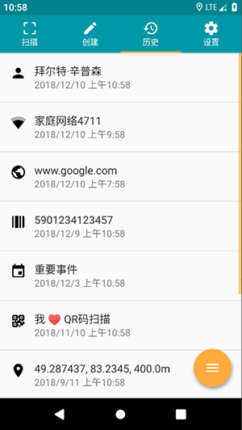

为什么一个扫码工具敢不做云同步——QR Scanner app 背后的架构取舍
从 TeaCapps 的德国团队到 CSV 导出的数据哲学，拆解一款老牌扫码应用如何用极简架构扛过十年系统迭代。
一个反直觉的设计
我一直在想，扫码应用这个品类到底有什么难的——打开相机、识别二维码、跳转链接，完事。Google Play 和 App Store 里扫码工具多如牛毛，界面都长得差不多，但活过五年的屈指可数。TeaCapps 做的这款 QR Scanner app（iOS 端叫 QRbot）就是其中之一，累计评分量到数百万条量级，放在工具类里算是长跑型选手。
但真正引起我注意的不是它活了多久，而是它故意不做的那些事：不做账号体系，不做云同步，不做数据加密，不做跨设备推送。所有历史记录存在手机本地，丢了就没了；想换机？先导出 CSV，再在新手机里手动导入或者重新扫一遍。这套设计在今天看来简直是反互联网的——所有主流工具都在往云端搬数据，它偏要做一座孤岛。
为什么？我翻了它的官网文档、拆解了几个版本的变更日志，甚至对比了 iOS 版 QRbot 和安卓版的差异。答案藏在一个很朴素的技术取舍里：扫码数据的生命周期，本来就不该被绑定在某个应用的私有体系里。
拆解：本地存储 + 系统分享的极简架构
这款应用的数据架构用一句话就能概括：SQLite 存历史 + 系统分享面板当唯一出口。没有自建的后端服务，没有用户账户，没有任何网络请求发生在扫描动作本身。你打开相机扫完码，结果直接写进本地数据库，整个过程跟断网开飞行模式没区别。
这件事说起来简单，做起来其实很反常识。大多数同类应用的做法是：扫完码自动同步到云端，服务器存一份、手机存一份，换机时登录账号就能恢复全部历史。好处是无缝，代价是——你的扫码记录（可能包含快递单号、WiFi 密码、公司内部链接、甚至个人身份信息）全部过了开发商的服务器。TeaCapps 这家德国公司显然对这件事有不同的判断。
让我把这套架构拆开来看。
第一层：本地存储为什么够用
应用内部用 SQLite 存扫描历史，每条记录包含时间戳、码型、原始内容、用户备注，再加一个自增 ID 当主键。不做加密，因为设备本身有锁屏和系统级加密兜底；不做分类标签，因为扫码数据天然按时间排序就能覆盖 90% 的查询场景。
这就像你在办公桌上放一个便签本——便签本身不锁抽屉，因为办公室有门禁；也不搞文件夹分类，因为按日期翻找就够了。这套"够用就行"的哲学贯穿了整个应用设计。

第二层：CSV 导出是数据自主权的核心
"CSV EXPORT AND ANNOTATIONS"是官方卖点清单的最后一条，但我认为这是整套架构的关键一环。CSV 不是一个功能，它是一个设计声明：这些数据属于你，不属于我。
为什么选 CSV 而不是 JSON 或私有格式？原因有三：
第一，零依赖兼容。 所有表格软件都认 CSV——Excel、WPS、Google Sheets、Numbers 直接双击打开。你导出的文件不需要任何专属阅读器，二十年后的软件也打得开。JSON 需要懂点技术的人才能解析，私有格式更是换个应用就作废。
第二，单向流动。 应用只提供导出，不提供导入。这不是疏忽，而是刻意为之：数据的出口是开放的，但入口只允许来自真实的扫码动作。这样做的好处是，你永远不会因为导入了一个格式错乱的 CSV 把本地数据库搞崩。
第三，系统分享面板对接。 导出 CSV 后，分享目标直接唤起安卓系统的标准分享面板——你可以存本机、发邮件、传网盘、或者发到任何支持文件接收的应用。应用本身不内置任何云盘集成，不要求你授权 Google Drive 或 Dropbox，它把选择权完全交给了安卓系统和你本人。CSV 归档的节奏和与网盘组合的工作流，在QR Scanner app文档里有更详细的说明。
第三层：不做云同步的真正原因
读到这里你可能会问：那 iOS 版 QRbot 有 iCloud 同步怎么说？这是个很好的反例——但仔细看 TeaCapps 的说明，iOS 版的 iCloud 同步也是系统级的，它没有自建后端，只是把 SQLite 数据库文件放到了 iCloud Drive 的容器里。换句话说，iOS 版做的事和安卓版本质一样：用系统提供的同步能力，不自己造轮子。
这背后反映的是一家德国公司的技术洁癖：能交给系统做的事，就不自己做。系统锁屏比你自建的密码锁更可靠；系统分享面板比你内置的云盘列表覆盖更广；iCloud 或 Google Drive 的加密传输比你自己写的网络库更安全。自建后端意味着要维护服务器、处理宕机、应对 GDPR 合规、处理用户数据删除请求——对于一个单机工具来说，这些成本远超过云同步带来的便利。
取舍：这套设计的代价是什么
当然，极简不是没有代价。我至少看到了三个明确的 trade-off。
第一个代价是换机和丢机的风险。 手机丢了、坏了、换了，本地历史就没了，除非你养成定期导出 CSV 的习惯。官方文档里专门写了"归档节奏"的建议：日常轻量每周导出一次，项目制则在盘点或巡检结束立即导出。这意味着，你需要有意识地维护自己的数据副本，而不是依赖应用帮你备份。
第二个代价是多人协作的天花板。 两个人分头扫码盘点同一个仓库，想用这款应用做实时协作？做不到。你只能各自导出 CSV，然后在 Excel 里合并。如果是一个团队想用扫码工具做流水线操作，这款应用就不够用了——它从设计之初就是单人单机的工具，不支持多人并发写入同一个数据集。
第三个代价是系统版本的强依赖。 应用依赖安卓的系统分享面板、SQLite 数据库、相机 API 这些底层能力。Android 6.0+ 是硬性门槛，老设备装不了新版；系统大版本更新时，如果 Google 改了相机 API 的行为，TeaCapps 需要尽快跟上——这也是为什么扫码工具需要持续维护，而不是一写完就可以躺平。如果设备环境装不了商店版，也可以从下载拿到 APK 包侧加载入。
判断：这套原理意味着什么
说了这么多，那这款应用到底适合谁、不适合谁？
适合它的场景有几个共同特征：单人使用、数据自主优先、对实时协作没要求。个人记账时扫商品条码、盘点自己家里的藏书和光盘、出差时扫描火车票和登机牌存证——这些场景里，本地存储足够用，CSV 导出偶尔做一次归档就够了。
不适合它的场景也很明确：多人协作、实时同步、需要跨设备无缝切换。比如一个小型零售店想用它管理库存，两个人分工扫码；或者一个活动现场想用它登记参会人员——这类需求需要的是一个后端驱动的 SaaS 系统，而不是一个单机工具。
但我觉得这款应用最有意思的地方，是它在工具类应用里做了一个很小但很重要的示范：不是所有数据都需要上云，不是所有功能都需要账号体系，极简架构反而能让一个工具活得更久。
TeaCapps 这家公司在德国 Obersulm，不大，做扫码做了快十年。他们的产品站 qrbot.net 页面很简洁，主列四件事：支持的码型清单、生成与分享、历史管理与 CSV 导出、商品比价。没有用户论坛，没有高级会员，没有积分体系——就是一个扫码工具，做得好用，然后一直维护着。
这在今天的移动互联网生态里，本身就是一种难得的坚持。
补充一下：这套资料在 GitHub、Gitee、GitCode 三个仓库都能拿到——之所以同步三份，主要是考虑到国内不同网络环境下的访问便利性，以及防止单一仓库因故不可用时断档。维护一个工具类应用的文档其实不比维护应用本身轻松，多几个备份渠道终归不是坏事。